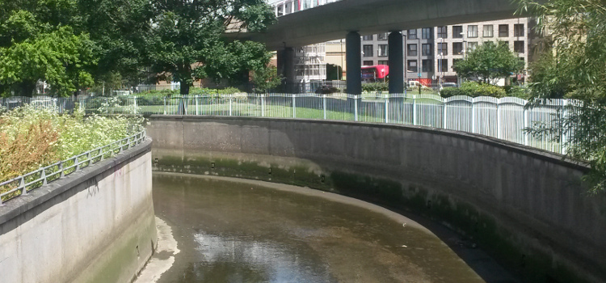

History
Broadway Fields, formerly known as the Deptford Municipal Playing Fields, opened in 1932 on a piece of land next to the Kent Water Works.
The area used to be a creative quarter of Deptford with the Seager building hosting many artists and creative businesses until removed in 2008.
According to a report via Restoring Rivers the developer of the area (Galliard homes) s106 money was to be allocated for the development of the river in this area, a planning document indicates that the development was not in the London plan set out by the Greater London Authority.Link to document.
Read about the Deptford X gallery
Please post your story to broadwaybridge@deptfordcreek.net